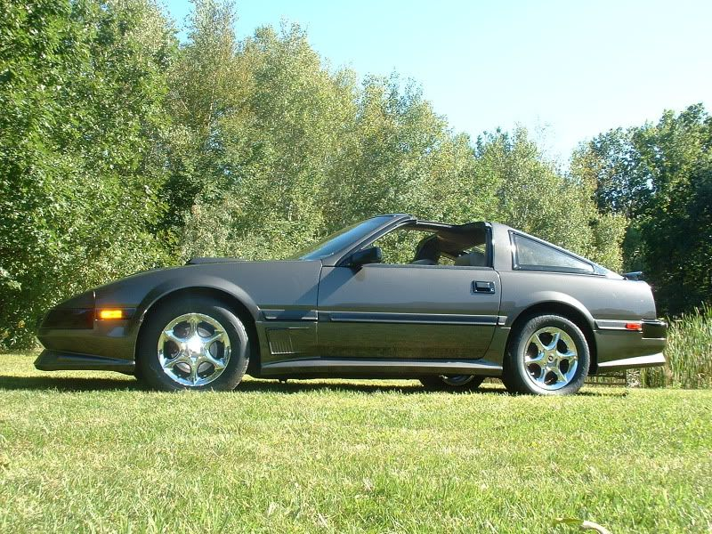
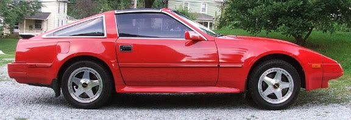

-
Here's a pic of my buddy's 84
-
Should be under Kouki since its kouki nose swapped. Thats the point of these threads, is to support zenki front end.ToiletFlush;346883 wrote: Here's a pic of my buddy's 84
- VG30DET (HE341) 86 300ZX - 1982 280ZX Turbo - Headered NA 1986 300ZX 2+2 - 2000 Xterra - -
Looks better this way. :PToiletFlush;346883 wrote: Here's a pic of my buddy's 84
Would look even more badass with a TBO lip. And with matching rear wheels. -
Get that kouki + TBO bizz out of here.
Panasport g7 + Kaminari + Chuki'86 300ZXT GLL
'78 Datsun 280Z BP
'11 Saab 9-3 Aero XWD -
I can't stand the early Z31 over bite front bumper, or the narrow body… blehhhNon turbo, 200K+ mile club, 60mm TB, 149WHP 168WTQ -
Pace;346920 wrote: Get that kouki + TBO bizz out of here.
Panasport g7 + Kaminari + Chuki86na - BlueZ
Shiro #366 - Kouki Monster
85t - Mr Tickles -
The mind-fuck I've always had about that car though, is while it looks like a Kaminari front kinda…the currently-available Kaminari front has more "louvers" in it.adamvann3;346947 wrote: I have to agree. The Chuki with shaved plate with a kaminari front has to be one of my favorite looking Zs- VG30DET (HE341) 86 300ZX - 1982 280ZX Turbo - Headered NA 1986 300ZX 2+2 - 2000 Xterra - -
Good for you. I can't stand Koukis without front lips. They look like wannabe miatas.tatsu;346926 wrote: I can't stand the early Z31 over bite front bumper, or the narrow body… blehhh- VG30DET (HE341) 86 300ZX - 1982 280ZX Turbo - Headered NA 1986 300ZX 2+2 - 2000 Xterra - -
Non-louvred version? http://www.kaminari.com/nissan-300zx-air-dam-frp-1986michaelp;346961 wrote: The mind-fuck I've always had about that car though, is while it looks like a Kaminari front kinda…the currently-available Kaminari front has more "louvers" in it.
Full pic:
'86 300ZXT GLL
'78 Datsun 280Z BP
'11 Saab 9-3 Aero XWD -
Yeah, the louvered one always threw me for a loop, but has been growing on me, but as Pace pointed out they do make the non louvered version as well. There are pictures of an AE in j-land with this installed. I think the shaved front plate plays a lot into how it flows.michaelp;346961 wrote: The mind-fuck I've always had about that car though, is while it looks like a Kaminari front kinda…the currently-available Kaminari front has more "louvers" in it.
Pace;346964 wrote: Non-louvred version? http://www.kaminari.com/nissan-300zx-air-dam-frp-1986
I love everything about this car, the color, JDS wheels in a gun metal… just a winning combination. Wish I could find more pictures of it.86na - BlueZ
Shiro #366 - Kouki Monster
85t - Mr Tickles -
Indeed. I really want that air dam for my car, but I'd likely break it drifting…and thats a big chunk of change just to break the first time out.adamvann3;346970 wrote: Yeah, the louvered one always threw me for a loop, but has been growing on me, but as Pace pointed out they do make the non louvered version as well. There are pictures of an AE in j-land with this installed. I think the shaved front plate plays a lot into how it flows.
I love everything about this car, the color, JDS wheels in a gun metal… just a winning combination. Wish I could find more pictures of it.
- VG30DET (HE341) 86 300ZX - 1982 280ZX Turbo - Headered NA 1986 300ZX 2+2 - 2000 Xterra - -
http://www.styleauto.de/nissan/nissan_menue.htm
I love the Zenki StyleAuto kit. I was planning on getting the mk1 MR2 kit before I got my Z. They used the same design for the rear bumper on both kits lol. I've never seen a 2+2 look so good. Proud to own such a looker. 1986 300ZX factory Turbo 2+2 5 speed swap. 1985 Toyota MR2. Floor boards gone. Good fabrication practice.
1986 300ZX factory Turbo 2+2 5 speed swap. 1985 Toyota MR2. Floor boards gone. Good fabrication practice.

-
Overbite, what overbite? Depends on the air dam used, and most of the Kouki's in their own thread have an aftermarket air dam.
I like the way the Zenki front bumper kind of continues the body like curve. The Kouki front bumper looks likes like a blunt end.
The perfect Z31, Kouki front end (because I like the smaller headlights and separate driving lamps) on an 86T body because I like the 84-86 rear ends better with the wide body fenders. If you are a 240Z purists, the Zenki and Chouki rear end is old school, like the 240Z. The 87 Kouki rear end was the first Z car without separate tail lights with the license plate in between. Putting the plate on the bumper on the Kouki looks crappy with the BIG bumperettes.
Restore it, Don't crush it. They don't make them like this anymore.
Scott
85 Turbo, original owner, restored
93 NA Babied

-
The overbite is obvious.

The top/middle of the bumper sticks out far beyond the bottom part. It's as if someone removed a person's bottom lip. It really does need an air/dam to correct. (The stock zenki turbo lip does little to correct this).
Koukis even w/o a lip have far less overbite. -
I like the stock turbo lip though.- VG30DET (HE341) 86 300ZX - 1982 280ZX Turbo - Headered NA 1986 300ZX 2+2 - 2000 Xterra -

Copyright © 2006–. All rights reserved. Privacy Policy